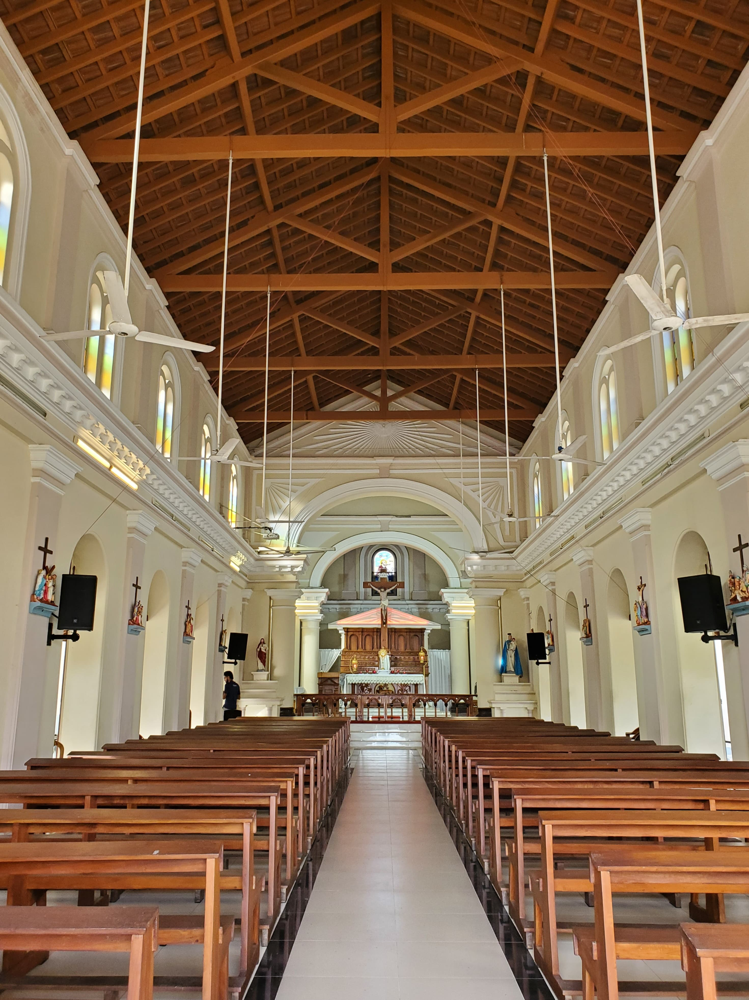
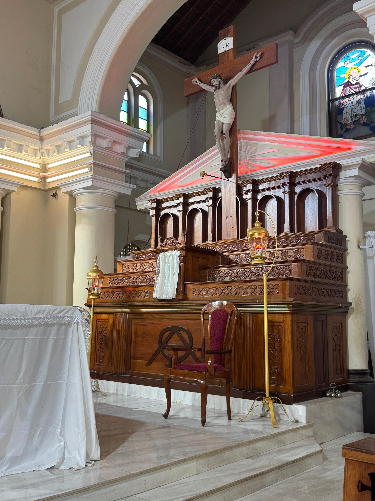
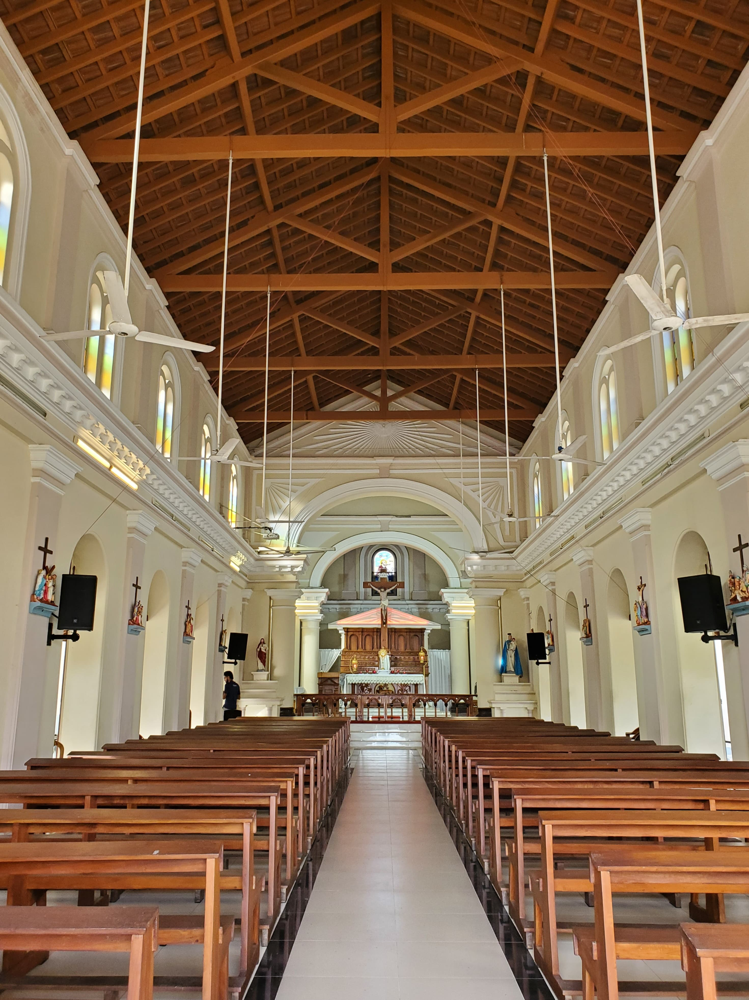
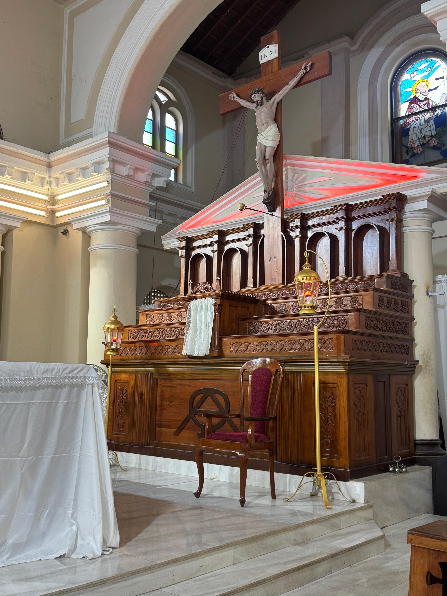

About Our Church
Welcome to our church community, where faith, fellowship, and service come together to honor God and uplift one another.
Welcome to our church community, where faith, fellowship, and service come together to honor God and uplift one another.
In 2022, the St. Francis de Soles Church in Kattuwa proudly marked a significant milestone in its spiritual journey, celebrating a legacy built over generations. Rooted in deep Christian values and sustained by unwavering faith, the church has stood as a pillar of strength for the local community. From its humble beginnings to its present stature, the church has flourished through the dedication of priests, teachers, lay leaders, and countless parishioners. Each individual’s contribution—whether through prayer, service, or education—has helped shape a spiritual home that radiates warmth, guidance, and unity. The enduring presence of the church reflects a collective devotion to faith, culture, and communal life.
Looking ahead, the faithful of Kattuwa remain committed to nurturing and safeguarding this sacred heritage for generations to come. Inspired by the intercession of Saint Francis de Soles, the community continues to promote spiritual renewal, social outreach, and educational advancement. Future plans focus on empowering youth, deepening religious understanding, and strengthening parish initiatives that support both spiritual and social well-being. With hope and determination, the church aims to remain a beacon of faith and service—a place where tradition meets progress, and where every believer finds purpose, inspiration, and a lasting sense of belonging.
Step into the inspiring story of our beloved parish, where faith, tradition, and community intertwine across generations. From its humble beginnings to its vibrant present, St. Francis de Sales Church has been a beacon of hope, worship, and fellowship. Here, we celebrate the enduring legacy of our patron saint, the dedication of our clergy, and the unwavering spirit of our parish family. Explore our rich heritage, meet the faithful who shaped our journey, and discover how our shared devotion continues to light the path forward. Welcome we’re glad you’re here!


 





"God, because of your love, you have given me a spirit for salvation."